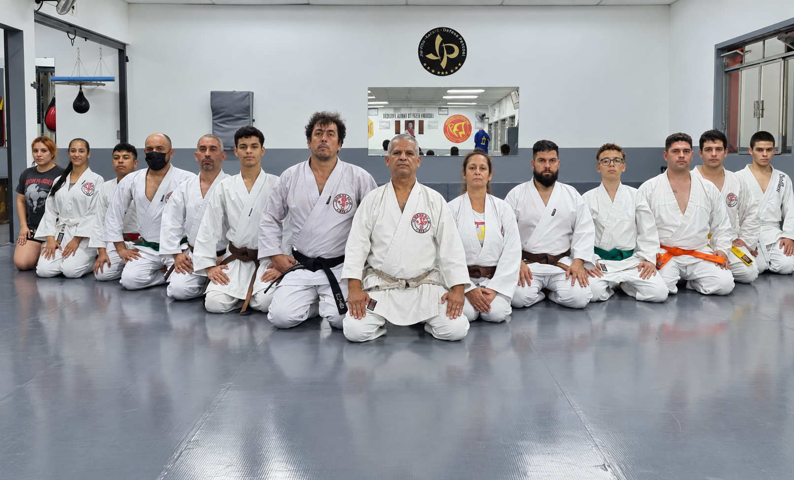
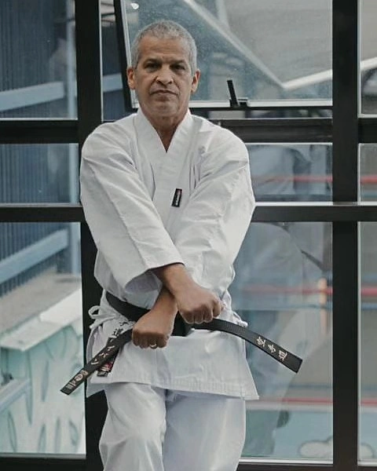
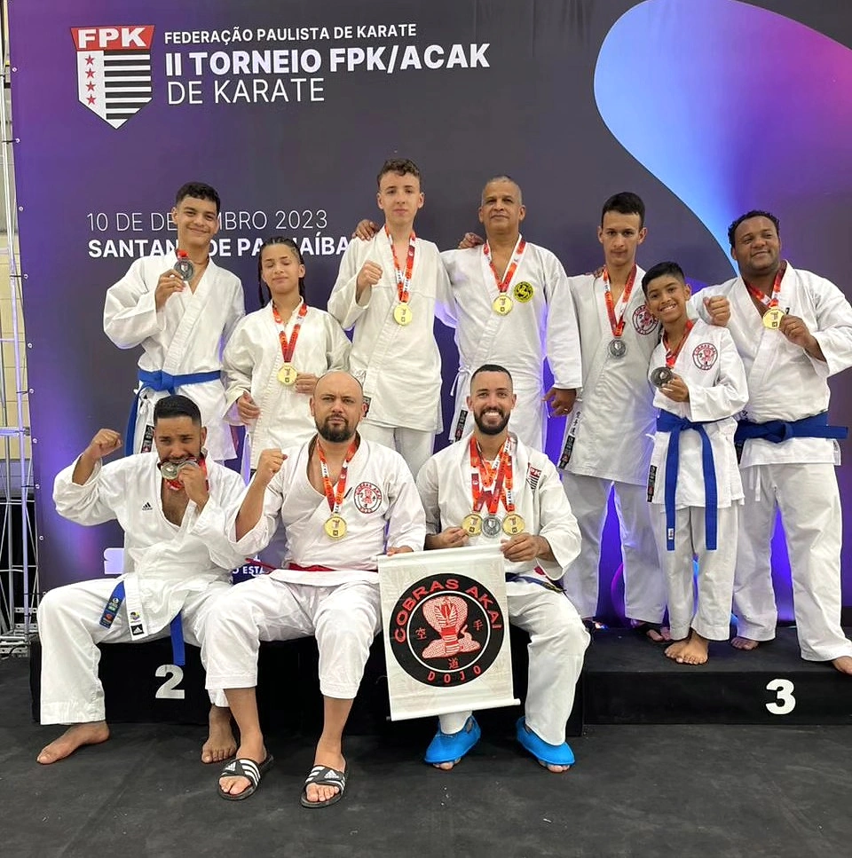
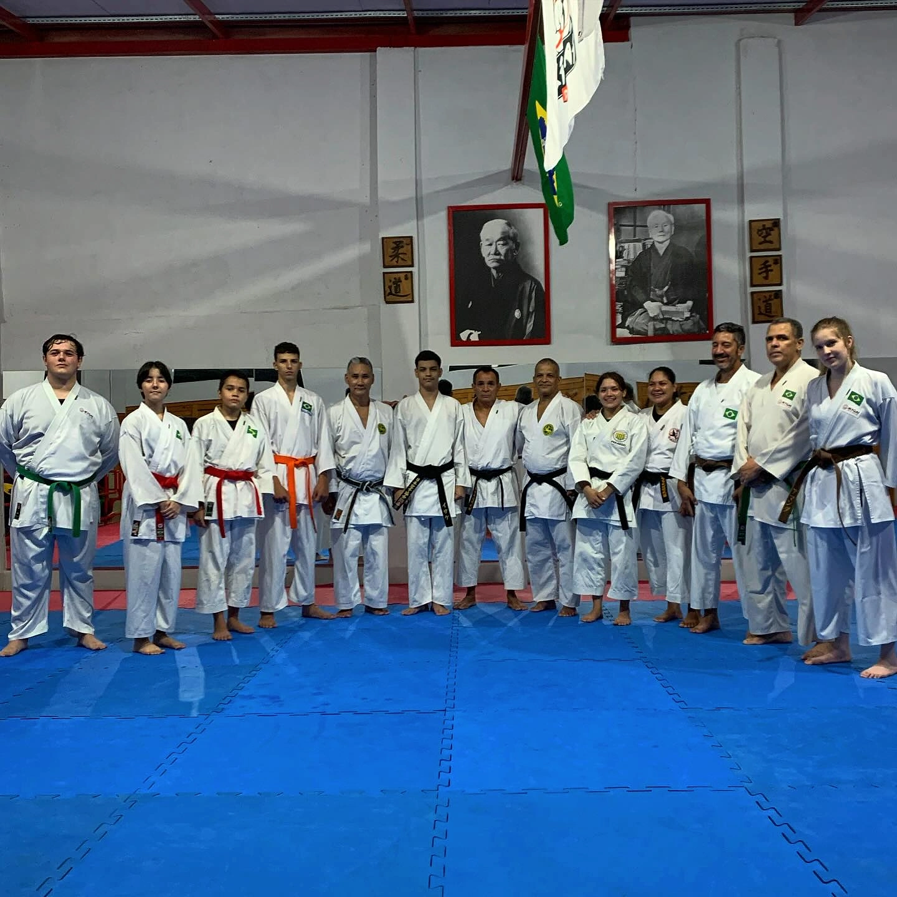
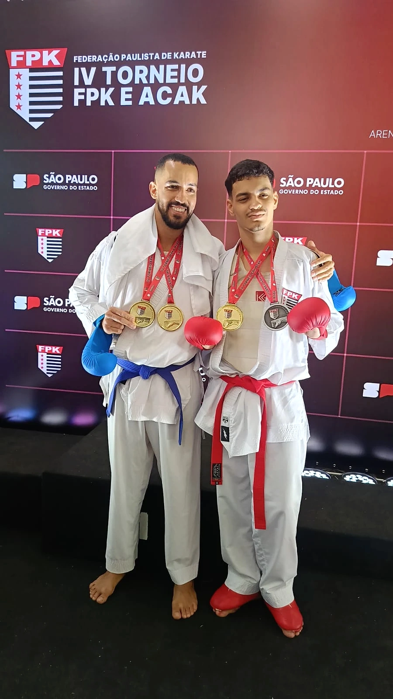
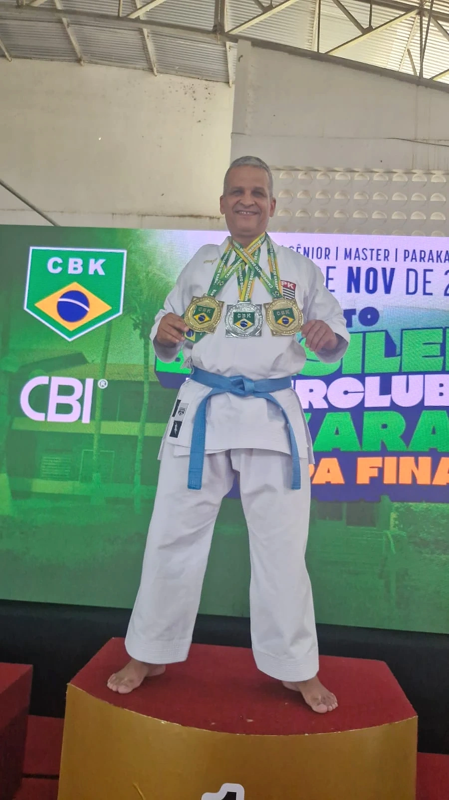
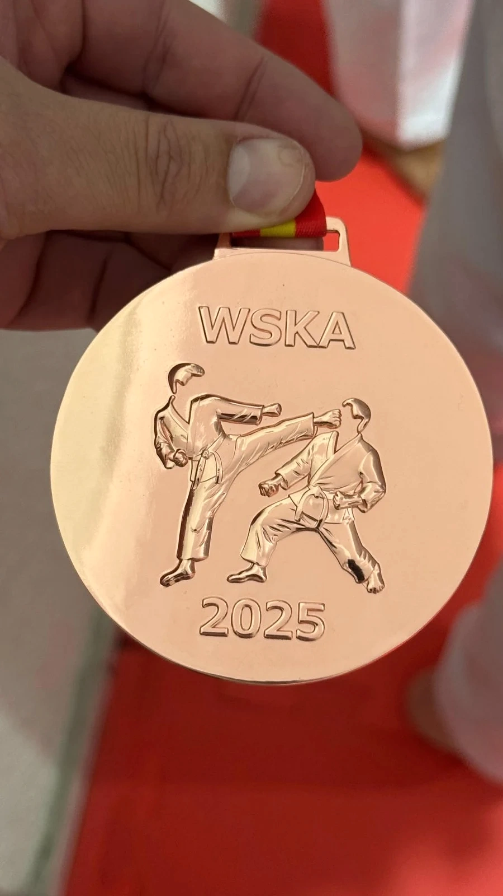
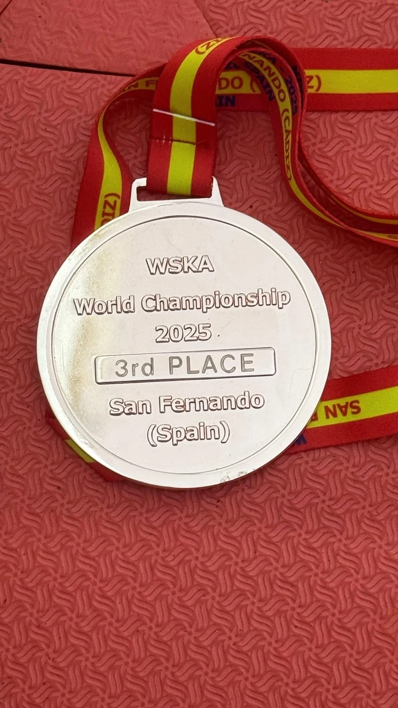

O DOJO
Conheça a
Cobras Akai.
Da sala de casa ao dojo de hoje: conheça a academia e o Shihan Ivam Silva.

Aprender.
E seguir aprendendo.
A identidade da Cobras Akai reúne história, disciplina e tradição. No dojo, essas palavras encontram o movimento e as pessoas que fazem parte da prática.
NOSSA HISTÓRIA
Antes do dojo,
a sala de casa.
A história da Cobras Akai começa em um espaço simples: a sala de casa. Ali, o Shihan Ivam Silva dava suas aulas de karate. O que começou dentro de casa ganhou outros endereços, até chegar à sede atual da academia.
O Shihan permaneceu à frente desse percurso, ensinando e competindo. Também levou outros praticantes às competições, ampliando a presença da Cobras Akai na comunidade das artes marciais, no Brasil e fora dele.
As fotografias guardam parte dessa trajetória. Reúnem pessoas, turmas e momentos de diferentes fases da academia. Hoje, a Cobras Akai reúne karate, lutas e fitness, mantendo o karate no centro de sua identidade.

Shihan
Ivam Silva.
Professor à frente da Cobras Akai desde as aulas na sala de casa, o Shihan Ivam Silva reúne ensino, prática e participação em competições em sua trajetória.
Ao longo desse percurso, também levou outros praticantes a competir e a participar da comunidade das artes marciais, no Brasil e fora dele.
REGISTROS DO CAMINHO
Histórias
que ficam.
Encontros, prática coletiva e registros de competição fazem parte do acervo da Cobras Akai.


Uma publicação do acervo: Ivam da Silva
Peça original do acervo, preservada como registro. Informações reproduzidas na imagem pertencem à publicação.
NO TATAMI E ALÉM
O treino também
deixa lembranças.
Encontros, registros de competição e detalhes guardados no acervo da Cobras Akai.


DETALHES DO ACERVO / 2025
Uma medalha.
Duas faces.
O verso registra “WSKA World Championship 2025”, “3rd Place” e “San Fernando (Spain)”. Um detalhe do acervo para ver de perto.


道SEU PRIMEIRO PASSO
Comece com
uma conversa.
Conte qual atividade chamou sua atenção e consulte as turmas e os horários.